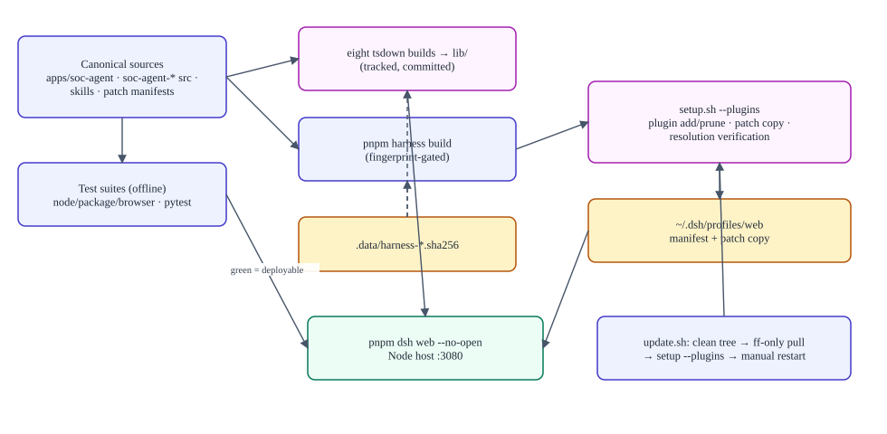
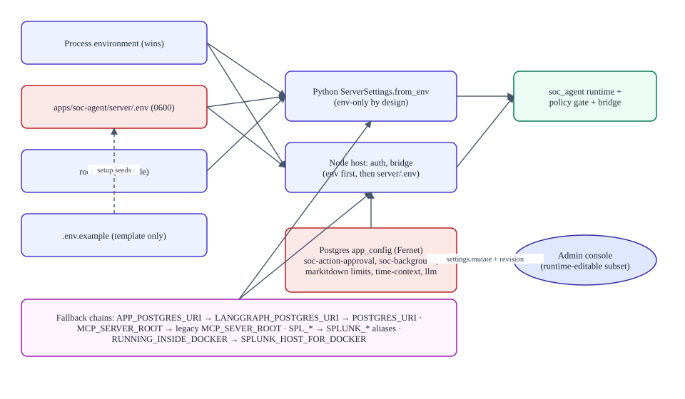

Operations, configuration and data
Verified against commitb26d55d274cf298a456d84edfbcb42b8dc90134b(2026-09-11T15:35:35Z) · documentation verified 2026-09-12.
Presents: DEPLOYMENT_AND_OPERATIONS.md + CONFIGURATION.md + DATA_AND_PERSISTENCE.md — the Markdown files are the source of truth.
Build / test / deploy lifecycle

Setup doctor stages: layout guard → prerequisites (node/pnpm/uv) → parameter collection (documented precedence; secrets echoed off) → env files (0600) → uv sync → fingerprint-gated harness install/build (SOC client drift auto-repaired) → plugin add/prune (managed set) → SOC bundle registration + resolution verification → summary (masked values; starts nothing). --check audits everything read-only; --rebuild forces rebuilds.
Update: update.sh refuses arguments and dirty trees, fast-forwards the current branch, runs setup.sh --plugins, and asks you to restart manually. Rollback is a manual git checkout of the previous commit + rerun setup; there is no database backup command — back up PostgreSQL together with APP_SETTINGS_ENCRYPTION_KEY.
Health: ./setup.sh --check; admin Connections checks (Splunk, subscription); startup log lines (bridge enabled/disabled; Python spawn is fatal on failure). Correlate logs with soc_correlation_id.
Configuration precedence

Required keys by condition: always SOC_ADMIN_EMAIL/SOC_ADMIN_PASSWORD; for login APP_POSTGRES_URI + APP_SETTINGS_ENCRYPTION_KEY; per service ZIMBRA_HOST, SPLUNK_MCP_ENDPOINT+SPLUNK_TOKEN (both or bridge off), SUBSCRIPTION_SERVER_URL/USER/PASSWORD. Secrets never enter shell history, tickets, or docs. Restart rules: env change → host restart; admin-console settings → live; client change → rebuild bundle; patch change → restart (+ setup when wiring affected).
Data and persistence
PostgreSQL is the only durable store that matters: soc_users, soc_app_sessions (Zimbra token Fernet-encrypted; Node reads omit the column), soc_session_revocations (one-shot), ownership claims (soc_workspace_owners, soc_session_owners, soc_folder_owners), encrypted app_config, legacy zimbra_accounts. Working files live under .data/soc-workspaces/<userId>/. Retention: sessions 24 h (lazy deletion); no background sweeper; conversation retention is deployment-defined (unknown). Concurrency: owner-guarded upserts, revision-checked settings, filter fingerprints, bounded thread pool (8 global / 2 per principal).
| Store | Kind | Notes |
|---|---|---|
| PostgreSQL | store | Node pool max 10; Python pool 1–4, 15 s statement timeout |
| Per-user workspaces | sensitive | Path-validated, symlink-safe containment |
server/.env, harness .env | sensitive | 0600; never committed; stripped from Python children (admin vars) |
lib/ bundle | generated | Tracked; drift auto-repaired by setup |
| Legacy account file / SQLite evidence store | retained | Out of the active path |
Variable-by-variable reference: CONFIGURATION_REFERENCE.md · store catalog: DATA_STORE_CATALOG.md.